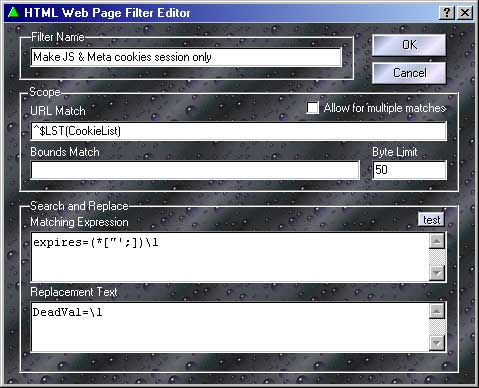
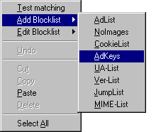

This is the web page filter editor. Here is where you can modify the matching rules that allow the Proxomitron to re-write web pages. Click on an area below to get an explanation of its function.

The Basics...
At its simplest the matching rules work much the same as a word processor's "Search and Replace" function. Any text matching the "Matching Expression" will be replaced with the text in the "Replacement Text" section. A matching expression of "Rimmer" with a replacement text of "That Smeghead" for instance, would change every occurrence of "Rimmer" on a web page to "That Smeghead". Simple no?
Things really get fun when you start adding Matching Rules into the mix.
"<start>" and "<end>"
Besides the normal text and matching expressions, the matching clause can have two values that have special meaning: <start> and <end>.
<start> inserts the replacement text at the beginning of a web page - use it to add items like JavaScript to a page. Likewise <end> can be used to tack stuff to the tail end of a page.
For these special cases, bounds and limit are ignored. Also when used by multiple rules, the items will be added in the same order they appear in the web page filter list.
What the heck is this Scope thing anyway?
In HTML it's not uncommon for tags to run for several lines. Scope settings allow the filter to determine how far forward to search for the end of a match after finding the start. If not for scope, the entire web page might have to be scanned before a rule could be sure a there was no match. Not a good idea, since no data could be sent to your browser until the whole page finished loading. Thankfully the designers of HTML gave their tags predictable beginning and ending values which makes things a bit easier.
The byte limit and bounds limit both work together to restrict the amount of text searched.
Byte Limit controls how many characters forward to look for a match before giving up. Normally keep this as small as possible - for most tags, a value of 128-256 or even less is fine. Increase it if you find a rule that should match isn't working. Making it too large however, can make pages appear to load slower since the program must process more data before sending anything to your browser.
Often the best size to use depends heavily on the tag in question. The "<Script ... </script>" tag for instance, often needs a large limit since it may contain many lines of JavaScript. In this case, try a limit of around 4096.
Bounds Limit is just an initial matching expression used to control the range (or boundaries) of the main matching expression. Normally a bounds check simply consists of the HTML start and end tags with an asterisk in between - "<script * </script>" Anything valid in the matching expression can be used here, but with a bounds check - the simpler it is, the better.
Its use is optional - you don't need it for many simple matching expressions. However, with complex matches it can improve performance, since the main expression need only be checked if the bounds returns true. More importantly, it's also useful for preventing a rule from matching more text than intended. Take the following rule intended to match a web link....
Matching: <a * href="slugcakes.html" > * </a>
If matched against the following text...
<a href="crabcakes.html" > some stuff </a><br>
<a href="slugcakes.html" > other stuff </a>
The first asterisk would match the entire area highlighted in blue and grab both links instead of just the second one! By using a bounds match like "<a * </a>" it's restricted to only checking one link at a time.
The Matching Expression and Bounds
When not using bounds , never place wildcards at the beginning or end of a matching expression (as in " *foo* "). This results in the rule grabbing however many characters byte limit is set to - not usually what you want.
When using bounds however, the situation changes. Since the bounds selects the range of text being searched - the matching expression must match everything matched by the bounds for the rule as a whole to match. The easiest way to do this is by using wildcards at both the beginning and end of the expression. Often matching variables are used (as in "\1 foo \2") so the text surrounding the part of the tag you're matching can be captured and included in the replacement text.
Here's an example of matching a link like: <a href="http://somewhere"> some text </a>
| Bounds | : <a\s*</a> | Limit: 128 |
| Matching | : * href="\1" * | |
| Replace | : <a href="\1"> some new link next </a> | |
URL Match - a different kind of scope control
You can use URL Match to limit a filter to affect only certain web pages. All matching rules apply here, so you need only match part of the URL. Multiple pages can be included by using the OR symbol "|" as in "www.this.com|www.this.too.com", and pages can be excluded by using negation "(^...)" as in "(^www.not.this.page)".
Also note that the "http://" portion of the URL is removed prior to the match - don't test for it.
 If you have a bunch of URLs to match or want to use the same URLs for multiple filters, you can use a blockfile here too. For example, if you have a blockfile named "MyURLs" and you only want this filter to work on sites named in that list, just enter $LST(MyURLs) in the filter's URL match. Likewise, if you wanted the filter to work on any site not in the blockfile, just wrap it in a NOT expression like (^$LST(MyURLs)). In fact, if you right-click over the URL match, you'll find options on the context menu to automatically add a blocklist command or edit a blockfile.
Also on the URL match's context-menu you'll find an option to test the URL match. This is silimar to the filter test and will let you easily see if a given URL would match or not.
What does "Allow for multiple matches" do?
Normally, when a rule is matched the result is sent directly to the web browser - no other rules are allowed to process the matched section. This is mainly for efficiency, as it saves quite a bit of work, but it's also a useful way to give certain filters priority over others - essentially it's first come, first served.
This doesn't always work however. Take the "<Body ... >" tag - It contains several, somewhat unrelated, elements that we may want to change. For instance, if we had two rules - one that changed the default text color and another that changed the background image - we'd have a problem. The first rule would prevent the second rule from working by "using-up" the <Body> tag. This is where "allow for multiple matches" comes in. When checked, it inserts the result of a match back into the processing buffer so other rules can get a whack at it. In the above scenario, if we enabled it on the first rule, the second rule could then also match.
Use this feature sparingly - although powerful, it does require more processing than normal, and if not used carefully can lead to "recursive" matching.
Consider the following situation - say there's a rule with a matching clause of "frog" and a replacement text of "The evil frog must die!". Looks innocent enough doesn't it? Ah, but if this rule had multiple match enabled, the "frog" in the replacement text would cause the rule to match its own output - resulting in an endless plague of frogs! Why? well the first time the rules "sees" the word frog it inserts the phrase "The evil frog must die!" - simple enough, but the scan continues forward until it hits the new "frog" and the whole process repeats itself. The solution? Well, if "frog" had been the first word in the replacement text this wouldn't have happened. The next match always occurs one letter forwards so it would see "rog" instead of "frog". Just make sure your rule won't match its own replacement text - minus its first character - and all will be ok.
 Return to main index
Return to main index